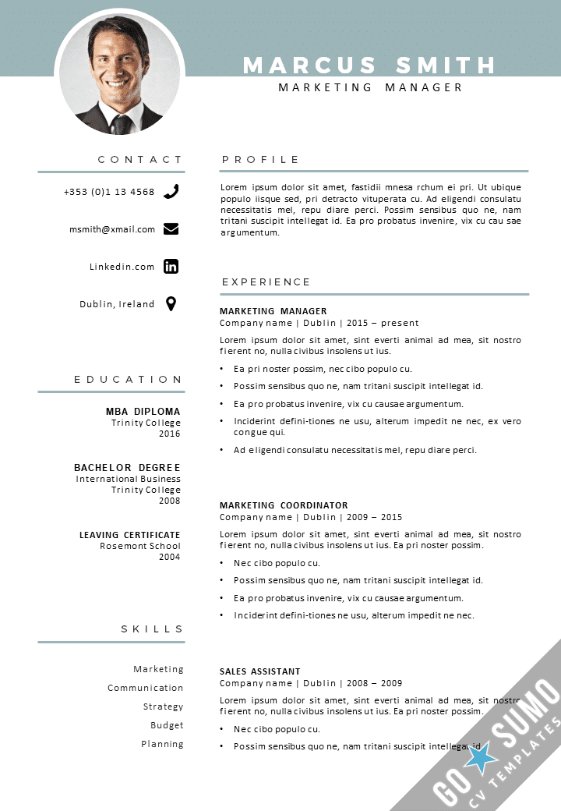
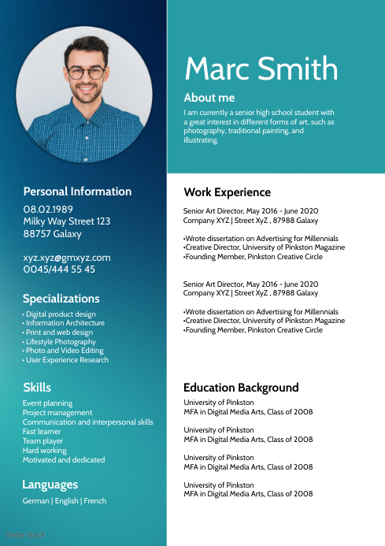
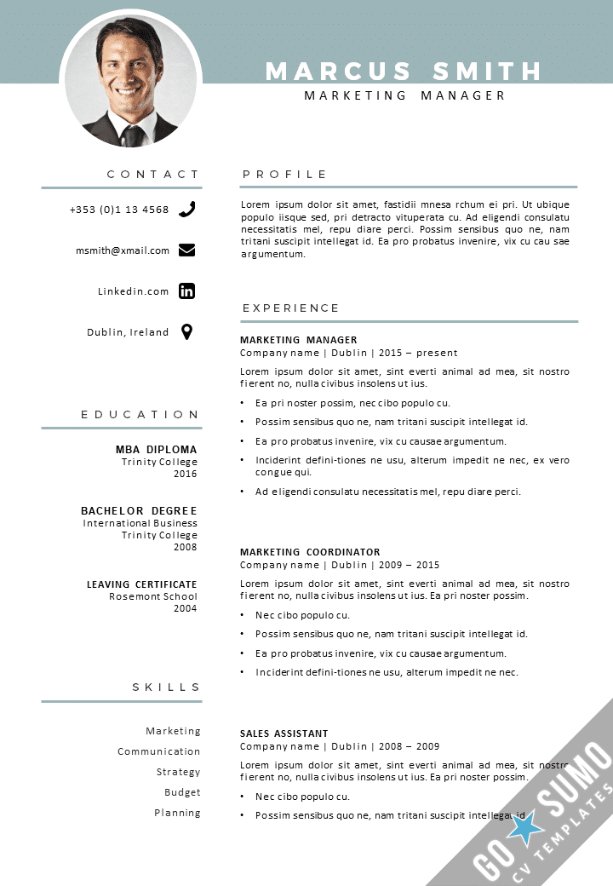
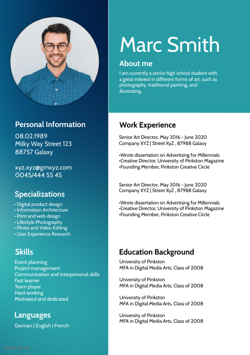

Impress
employers with
your CV
This section provides you with the tools to create a professional resume for free. Utilize our templates and follow resume rules that employers look for. Get started now to enhance your career opportunities!
 


